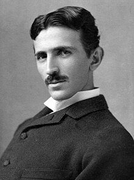

Edith Clarke
¡Conoceme!
↻Inventora de la 'calculadora Clarke', un dispositivo gráfico que resolvía ecuaciones lineales con funciones hiperbólicas diez veces más rápido que métodos anteriores. Fue una pionera en la ingeniería eléctrica.
Nikola Tesla
¡Conoceme!
↻

Ingeniero e inventor, conocido por sus contribuciones al desarrollo de sistemas de corriente alterna (CA).
Grace Hopper
¡Conoceme!
↻
Fue una científica de la computación y militar estadounidense, pionera en el ámbito de las ciencias de la computación. Además, fue la primera programadora que utilizó el Mark I.
James Watt
¡Conoceme!
↻
Ingeniero mecánico, mejoró la máquina de vapor, catalizando la Revolución Industrial.